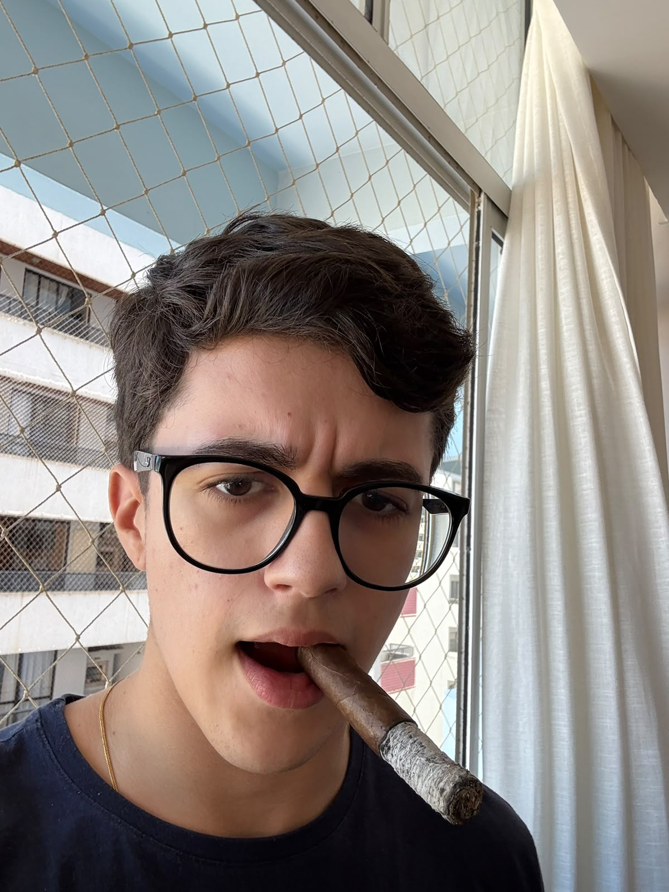

Estudante de Sistemas de Informação

Tenho 18 anos e sou estudante de Sistemas de Informação. Atualmente, trabalho na área de TI na empresa do meu pai. Ainda não conheço muito bem todas as áreas que posso seguir dentro do curso, mas pretendo conhecê-las ao longo dos oito semestres e descobrir com qual delas mais me identifico.
Ainda estou iniciando meus estudos na área de programação, porém já trabalho com tecnologia e possuo conhecimentos na área de hardware e suporte de TI.
Ainda não defini qual área da tecnologia pretendo seguir. Meu objetivo durante a graduação é conhecer diferentes áreas e encontrar uma profissão com a qual eu me identifique, seja feliz e não me arrependa da minha escolha.